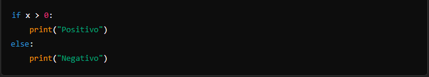
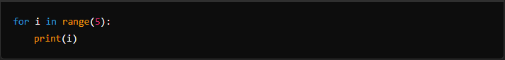
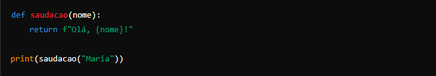
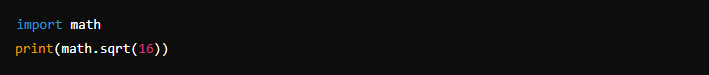
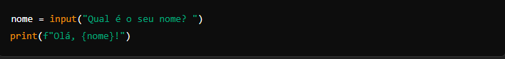
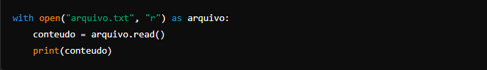

Conceitos Básicos da Linguagem
1. Sintaxe Simples e Indentação
Em Python, a indentação não é apenas uma questão de estilo, mas uma parte essencial da sintaxe. Ela define blocos de código, como loops e funções. Por exemplo:

2. Tipos de Dados
Python possui vários tipos de dados embutidos:
Inteiros (int): Números inteiros, como 5 ou -3.
Flutuantes (float): Números com ponto decimal, como 3.14.
Strings (str): Sequências de caracteres, como "Olá, Mundo!".
Booleanos (bool): Verdadeiro (True) ou Falso (False).
Listas (list): Coleções ordenadas de elementos, como [1, 2, 3].
Tuplas (tuple): Similar às listas, mas imutáveis, como (1, 2, 3).
Dicionários (dict): Coleções de pares chave-valor, como {"nome": "Maria", "idade": 25}.
3. Operadores
Python suporta operadores aritméticos, como +, -, *, /, operadores de comparação, como ==, !=, >, <, e operadores lógicos, como and, or, not.
4. Estruturas de Controle
Condicionais (if, elif, else): Controlam o fluxo do programa com base em condições.
Loops (for, while): Permitem repetir blocos de código várias vezes. Exemplo de um loop for:

5. Funções
Funções em Python são definidas usando a palavra-chave def. Elas ajudam a organizar o código e permitem a reutilização. Exemplo:

6. Módulos e Bibliotecas
Python tem uma vasta biblioteca padrão e suporte a módulos externos que podem ser importados para estender as funcionalidades do programa. Por exemplo:

7. Entrada e Saída de Dados
A função input() permite receber dados do usuário, e a função print() exibe informações na tela:

8. Manipulação de Arquivos
Python permite abrir, ler e escrever arquivos facilmente:
